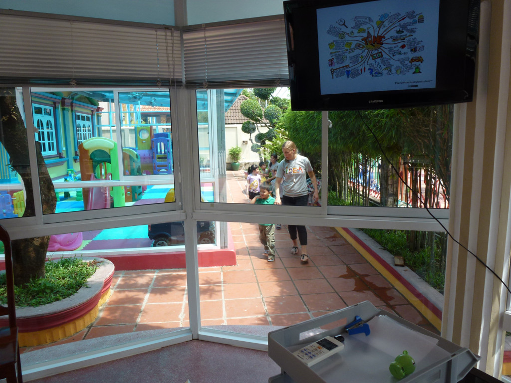

(This is a part of the Deeper Learning Story Bank. Add your story!)
Story title: A life of deeper learning – or – deeper learning as a way of life
Submitted by: Derek Nicoll
Idea Source School
DL story: I am rehashing a reply to Ryan Gallagher in the DLMOOC community
I feel that most, if not all of us, are unsure where the happy medium is, between agency and structure in deeper learning. This is perhaps this is the most significant question to DL lies for me.
Formative education
I had a very traditional didactic schooling in a Scottish Grammer school where, there was the liberal transfer of eventually redundant knowledge content, coupled with a curriculum which still included the classical languages, but very little skills experiences. In fact experience was dominated either by the eccentric idiosyncrasies of individual teachers or the avoidance of corporal punishments. In the fourth grade I remember getting a couple of strokes of the belt for getting questions wrong regarding the social ranking of the British aristocracy. In short, such experiences drove disengagement with learning, kept you on your toes about the school and even [abstract] knowledge itself.
Eventually seemed that everybody was like me, largely clock watching. Either to go home, to the next high-stakes exam, to the next spontaneous belting, or else they were as I cleverly shifting the draconian discipline of the place into a Greek comedy tuned into daily only for amusement and nonsense. In essence it was an exercise in disenfranchisement and dissociation. Perhaps it was also just a teenager thing, but ‘our’ world and ‘our’ values, our non-school world, were put into distinct relief by the obvious class ridden authoritarian and arbitrary hegemony, the performances, we faced at school.
This was a shame as I had manifested a self-driven interest in science and technology as a kid, I couldn’t wait to get into the labs of the secondary school, and could see though the doors, the large Volt meters in the physics classes, I could smell the Chemicals in the chemistry labs – my home study was marred by me being able to take things apart but not being able to put them together, or reconfigure electronics components into other devices etc. I thought I would learn all this in school.
But alas, this was not so. By 4th year at secondary, or grade 10, I was completely absorbed into our youth culture and had no interest at all in school expect for the amusing antics of the teachers and their vague attempts to instill militaristic regimes. But raging over the immediate horizon was an afflicted moon, the prospect of whether we were staying on for secondary 5 and 6 [Grade 11 and 12] with a view to going to tertiary education, or whether we would [be best to] leave to commence more vocational training and apprenticeships [or non-skilled work].
My exam results in the preliminary exams leading to the high stakes O levels were very poor and completely indicative of my lack of engagement and interest in schoolwork. I was aimed at blue collar work at best. I was also the first of my peer group to go steady and it wasn’t impossible that I may marry young, as many people were still marrying at 16, as was acceptable in our culture. However, I then had a vision, but not a very nice one, of a life marred by ignorance where my values would be confined to major issues such as what I would be wearing to my pub darts evenings, or any other of the obsessions and pastimes that a gas station worker occupies himself with. It was a frightful vision. I decided to change, engage, and thank goodness I had the resources and wherewithal to sit down, focus, get the books out and get reading. Within some 4 months I was leaving with 7 ‘O’ levels and the gateway opportunity to continue my education to the Higher certificate level.
My next year at school was spent constructively. My confidence expanded and I became student representative on the school council, and completed with an array of the right qualifications.
Life after school
After school and after travelling round Europe and North Africa and meeting some strange and exciting characters, I decided I was drawn more to studying arts than science and engineering. This was a little problematic. Our School curriculum had been designed so that we had to forego arts in favour of applied mechanics, engineering drawing and science at the third year, or Grade 8. I hadn’t even drawn a picture for some 5 years. I was being drawn to study art as an intellectual exercise rather than something I was truly interested and skilled in. But I nevertheless spent a couple of months just drawing things, building a portfolio and applying. I was accepted. At Art College, I spent much me in the library and read all manners of books expanding my mind and vocabulary. As I remember one in particular stands out – Arthur Koestler’s ‘The act of creation’. I spent the foundation year reading and painting and also took an interest in experimental music, an interest which would see me leaving college prematurely to pursue a new career in music. This was a great time – in the post-punk rock period of experimental art school bands we engaged in D.I.Y. recording and record publishing. It was a time of the independent label and diversity in alternative styles and sounds.
First taste of real independent study
After some time spent as a starving experimental musician, I felt it was time to return to do my undergrad degree and it was at this juncture that I encountered The School for Independent Study (S.I.S.) at the former North East London Polytechnic, now the University of East London.
NELP became a byword for innovation, most radically perhaps in its school for independent study, but throughout in its commitment to those who had felt excluded from higher education. The polytechnic directors and rectors beginning with George Brosan in the 70s, Gerry Fowler, and later Sir Toby Weaver in the 80s and 90s believed that education should equip students to define and solve problems. If the renaissance universities had made the acquisition of knowledge respectable, polytechnics had to make the *application* of knowledge respectable. Brosan said largely paraphrasing the constructivist views of John Dewey: “We are not put into this world merely to sit still and know: we are put into the world to act.” He also wrote: “If students are to be encouraged to learn how to apply their knowledge, they will do so as individuals: the polytechnics therefore serve not some abstract concept such as society, but the needs of each individual student.” Weaver also believed that education should develop a person’s ability to cope with life and that the acquisition of knowledge should not be its central purpose.
Much of the school’s philosophy and operating principles had scholarly origins (via Tyrell Burgress, another British pioneer of the pupil-led curriculum and founding father of Independent Study) in the works and ideas of Jan Amos Komensky (Comenius) the Moravian teacher, educator and writer in the 17th century. It was he who predated the likes of Rousseau through Dewey and Montessori, A.S. Neil through S.I.S. and emerging 21st Century pedagogies today, when he held that children learn through the senses, through evidence, not through authority. Above all, they were to be encouraged to question their teachers, to learn not just from their teachers but from each other. This resonates with other traditions including Buddhism. In The Kalama Sutta (Sutra) Gotama Buddha advocates a questioning, inquiring spirit, refusing to accept anything simply based on invoking an authority.
More immediately the S.I.S. philosophy rested upon the ‘two C/Karls’- Carl Rogers (student centred learning) and Karl Popper (problem solving method). In practice, students could, on approval, commence studies based entirely on their own interests, past experiences, knowledge and skills. They would plan and outline what they were going to do and why, what they needed in terms of resources and skills, and how they would be assessed. On approval of a validation board, and the successful negotiation of an individual work tutor they would commence their studies.
They would spend approx. 30% of their time on individual work, 10% on core ‘central studies’, time-management and other personal skills, political philosophy, essay writing, library research, anti-patriarchy workshops, co-counselling and t-groups, etc.; the remaining 60% was spent on group work projects where one would work in groups who autonomously choose subject, modes of operation and management, and what would be a final product.
Each individual group member would prepare a report detailing the group dynamics and processes as they worked towards the final product and some were successful and some failed. Regardless of outcome all was documented. One of the explicated course maxims was “process and method rather than content”, as the way to develop the skill of learning to learn. Another – strikingly anticipative of Google and Wikipedia was that “students learn to find and use information rather than learn it.” The report would detail issues of power, communication, organisation, application, motivation, and skill development/resourcing etc.
Over the first two years one was expected to participate in a series group work projects and then in one ‘set situation’. The only caveats being that you could not join a group with those you had worked with before, and second; you could not perform a role in the group concordant with your personal work and expertise. You were to be the proverbial ‘fish out of water’.
The completeness and explanatory nature of the final report, as well as its congruency or lack of it with the other group members reports served as work which was assessed by the faculty. No teaching, apart from the core studies took place; tutors and other academic staff only facilitated rather than led processes.
The nature of such a course was disconcerting to those who had not only been taught what to think but how to think and behave for most of their lives. We all kind of hit a wall at some point where we questioned our own validity regarding the course and, through extension, ourselves. It showed clearly and even highlighted the power of small group to accomplish all sort of strange and unfamiliar tasks.
This approach to learning was in keeping with much of the research which was already emerging then in the 1970s from industry and other professions. Namely, that what was needed as skills was the capacity to adapt to unfamiliar circumstances and new emerging challenges as well as all those that are now held as ‘transferable’ or ‘soft’ skills and knowledge over subject knowledge. Negotiated collaboration with unfamiliar others became an emblem of the course, and was to some extent the considerable challenge it presented (I think here of Maya Ervin’s experience in the first weeks DLMOOC panel discussion).
But, objectively, according to a national standards committee and quality programme [all new courses in the UK needed the scrutiny and approval of an external body - the Council for National Academic Awards (CNAA)], the claim was made that the work was equal to or better than degree work based on orthodox lecture/tutorial methods. In many respects the original aims of this course which was first inaugurated in 1974 are those congruent with 21st century learning:
“…our purpose is still to provide students with an educational experience that enables them to become generally competent and independent….. capable of coping with a wide variety of different situations… without needing to be dependent upon the direction of others… the ability to learn, challenge, and extend knowledge… The development of skills of problem formulation and the testing of solutions would be developed by a learning process which rests on the principle that since an educational programme is a planned solution to an educational problem, the starting point should be the student’s own formulation of his own educational problem and the most appropriate programme is one worked out and tested by the student in response.”
Furthermore, it was asserted that `the ability to cope (is) as much dependent upon self-confidence as it (is) on problem solving’. Self-confidence was therefore seen as a desirable outcome of learning as it was a key feature of independence.
Post-graduate work and postscript
Later I was awarded a scholarship and attained direct entry to the Doctoral Programme of Socio-Economic Research into Technology at the University of Edinburgh which again was also largely untaught beyond attendance at some of the graduate classes in the sociology of scientific knowledge and the philosophy of the Social Sciences. Of course by this time I had no problem with post-graduate education with supervisors and external examiners etc. having exposure earlier on with Independent Study and planning served to help me omit the ‘head scratching’ year that typified most British Ph.D. candidates due to never having to think or formulate novel problems and research questions.
What I am wondering now is how my own rich experience can be shifted to elementary education in a relevant and meaningful way, and not only that, elementary education a place which still suffers from the hangover of the complete destruction of its education system. We need to conform to universal standards beyond that of the local community of practice, which here is vacuous, ineffectual, directionless and weak.
For years self-directed study was a way of life for me and drives me now in my everyday life and work which are always viewed as projects. In my teaching, both in the U.K and in developing countries in Africa and Asia, I have used the Socratic/PBL approach and modified most of my ‘received’ courses and syllabus to shift the emphasis to the student voice and action. To an extent these have always never turned out quite as well as they could have been – thus they have served as fuel for learning and thus one of our current school rules and permissions – “Mistakes are our friends – if we never make any we have nothing to learn.”

Categories:
Mastering core academic content; Thinking critically; Collaborating; Self-directing learning; Believing in yourself (academic mindsets) Doing relevant, engaging work Making things; Presenting work to a real audience


{kind=link}